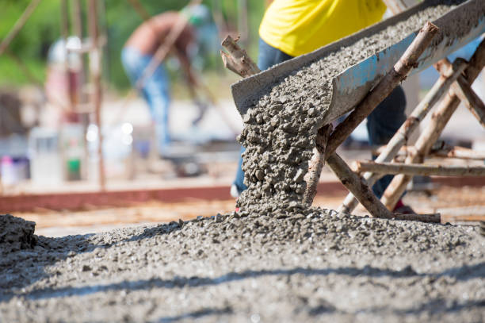
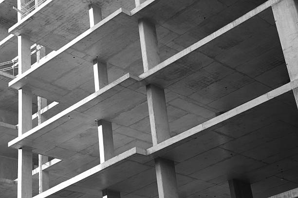

Atlanta Georgia
info@hudsonconcretecontractors.xyz
Atlanta Georgia
info@hudsonconcretecontractors.xyz

Top-rated concrete services in Atlanta Georgia . We provide expert installation and repair for driveways, sidewalks, and patios. Reliable, durable, and cost-effective solutions tailored to your needs.
Click Here To Call Us (877) 848-1711Looking for top-notch concrete services in Atlanta Georgia ? Our concrete company stands as a leader in the industry, offering a full range of services designed to meet your residential and commercial needs. Whether you’re planning a new driveway, a custom patio, or need professional foundation work, we have the expertise and equipment to get the job done right.
We specialize in concrete installations, repairs, and maintenance, ensuring your project is built to last. Our team uses only the highest quality materials and the latest techniques to deliver durable, attractive, and cost-effective solutions. With years of experience serving the Atlanta Georgia community, we pride ourselves on providing exceptional customer service and unmatched craftsmanship.
From decorative concrete to large-scale commercial projects, we handle it all with precision and care. Our licensed and insured professionals are committed to delivering results that exceed your expectations. We also offer free consultations to help you plan your project from start to finish.
Choose the best concrete company in Atlanta Georgia for your next project. Contact us today to get started and see why we're the preferred choice for concrete services in Atlanta Georgia .
Residential & commercial Hudson Concrete Contractors
Quality services at affordable prices
Immediate 24/ 7 emergency services


Cracks in concrete surfaces are a common concern for homeowners in Atlanta Georgia and understanding their causes is essential for effective prevention and repair. At Hudson Concrete Contractors, we are dedicated to helping you maintain your concrete surfaces in optimal condition.
Shrinkage During Curing
One of the primary causes of cracks is shrinkage during the curing process. As concrete sets and dries, it naturally contracts. If the curing process is too rapid or not properly managed, it can lead to surface cracks. Ensuring adequate curing time and methods can help mitigate this issue.
Temperature Fluctuations
Concrete is sensitive to temperature changes. Extreme heat or cold can cause the concrete to expand or contract, leading to cracks. Proper control of temperature during both the mixing and curing stages is crucial to prevent these types of issues.
Poor Mixing or Application
Improper mixing of concrete or incorrect application can result in a weak surface prone to cracking. Using the right mix ratios and ensuring proper application techniques are vital for a durable and crack-resistant surface.
Settlement and Soil Movement
Concrete surfaces can also crack due to settling or shifting of the underlying soil. If the ground beneath the concrete is unstable or poorly compacted, it can cause uneven settling, leading to cracks in the surface. Addressing soil issues before pouring concrete is essential for long-term stability.
Overloading and Structural Issues
Excessive weight or structural stress can cause concrete to crack. Ensuring that the concrete is designed and reinforced to handle the expected load is important to prevent such problems.
Preventive Measures and Repair
To prevent cracks, use proper construction techniques, maintain adequate curing conditions, and ensure proper site preparation. If cracks do appear, timely repair is essential to prevent further damage. At Hudson Concrete Contractors, we offer expert services to address and repair concrete cracks, ensuring the longevity and durability of your surfaces.
For reliable solutions to concrete issues in Atlanta Georgia contact Hudson Concrete Contractors today. We’re here to provide expert advice and quality service to keep your concrete surfaces in top shape.
Residential & commercial Hudson Concrete Contractors
Quality services at affordable prices
Immediate 24/ 7 emergency services
If you’re searching for trustworthy cement contractors near you, look no further than Hudson Concrete Contractors. We have built a strong reputation for providing top-quality cement services, tailored to meet your specific needs. Our team of experienced contractors has the expertise and tools to handle projects of any size effectively. We prioritize durability, efficiency, and excellent customer service at every step. With us, you can expect a seamless process from start to finish, ensuring your satisfaction with our cement solutions.

Quality concrete services don't have to break the bank. Our affordable concrete services are designed to provide high-quality solutions at competitive prices. We believe everyone deserves access to professional concrete work, so we offer a wide range of services without sacrificing quality. Whether you need residential or commercial concrete services, our team is here to help you achieve your goals within your budget.

Protecting your concrete surfaces is essential for longevity and maintenance. Our concrete sealing services provide an effective barrier against moisture, stains, and environmental factors that can deteriorate your concrete. We use high-quality sealers designed to extend the life of your concrete surfaces while enhancing their appearance. Our experienced team ensures that every application is performed with precision and care, providing you with a protective solution that stands the test of time. Trust us to keep your concrete looking and performing its best with our specialized sealing services.

Uneven concrete surfaces can pose safety hazards and detract from the aesthetics of your property. Our concrete leveling services in Atlanta Georgia include both mudjacking and poly leveling techniques to raise and level sunken concrete slabs. We assess the cause of the settling and apply the most effective solutions to restore your surfaces. With our expertise, you can expect long-lasting results that improve safety and enhance the look of your property.
A well-constructed foundation is vital to the success of any building project. Our concrete foundation installation services in Atlanta Georgia are designed to provide you with a stable and secure base for your home or commercial property. With our meticulous planning and execution, we ensure compliance with local codes and standards while using only the best materials. When you choose us, you’re choosing quality and dependability, making your construction project a success from the ground up.
If you're looking to transform your concrete surfaces with color and depth, our concrete staining services in Atlanta Georgia are the perfect choice. Staining can enhance the natural beauty of concrete while providing a protective finish. Our team will work closely with you to select colors and techniques that meet your vision, whether for indoor flooring or outdoor patios. With our keen attention to detail, your stained concrete will be a stunning focal point of your property.

Among the many concrete construction companies, Hudson Concrete Contractors stands out due to our dedication to quality and customer satisfaction. Our comprehensive range of services covers everything from residential to commercial concrete applications, catering to every need. We focus on innovative solutions and use the best materials for all our projects, ensuring durability and visual appeal. Our experienced contractors are committed to delivering timely and cost-effective results that meet your expectations. Partner with us for your concrete projects and experience excellence in construction.

When it comes to construction, having access to quality materials is key, and our ready mix concrete delivery service ensures that you receive the exact specifications needed for your project. With our efficient delivery system and high-quality ready mix, you can be assured of quick service without compromising on quality. Our team works diligently to manage your concrete needs, providing flexibility and reliability whether you're working on a small home improvement project or a large commercial construction. Choose us for your ready mix concrete delivery needs, and experience seamless service from start to finish.
Years Experience
Expert Technicians
Satisfied Clients
Compleate Projects
At Hudson Concrete Contractors, we pride ourselves on delivering exceptional concrete services across Atlanta Georgia . Our reputation for quality craftsmanship, reliability, and affordability sets us apart from the competition.
Why Choose Hudson Concrete Contractors?
Firstly, our experienced team brings years of expertise to every project, ensuring precision and durability in all our concrete solutions. Whether you need installation, repair, or customization, we handle each job with the utmost care and professionalism. We understand the unique requirements of Atlanta Georgia and tailor our services to meet local standards and preferences.
Secondly, we are committed to using the highest quality materials and the latest techniques in concrete technology. This ensures that your project not only meets but exceeds your expectations. From residential driveways to commercial flooring, we offer solutions that are both aesthetically pleasing and long-lasting.
Additionally, customer satisfaction is our top priority. We offer transparent pricing with no hidden fees, and our friendly team is always available to answer your questions and provide guidance throughout the process. Our dedication to excellent service and timely completion means you can trust us to deliver outstanding results on schedule.
Choose Hudson Concrete Contractors for your next concrete project in Atlanta Georgia and experience the difference that comes with working with true professionals. Contact us today for a free consultation and see why we are the preferred choice for concrete services in your area.
When it comes to finding reliable and professional concrete contractors near you, it's essential to choose experts who understand the local landscape, climate, and building codes. Our team of skilled concrete contractors in Atlanta Georgia provides top-notch services tailored to meet your unique needs. With years of experience in the industry, we guarantee high-quality workmanship and attention to detail in every project. Whether it's a simple repair or a complete installation, we handle it all with precision and care.
In today's world, ensuring your home has a solid foundation is key to its longevity and aesthetic appeal. Our residential concrete services in Atlanta Georgia encompass everything from driveways to patios and walkways. We pride ourselves on using the finest materials and techniques to provide durable, visually appealing surfaces that stand the test of time. Plus, our team will work closely with you to create custom designs that fit your vision and budget, making your home beautiful and functional.
In the heart of any thriving business lies a commitment to quality and reliability. Our commercial concrete contractors in Atlanta Georgia specialize in large-scale projects that require careful planning and execution. From retail spaces to office buildings, we provide a comprehensive range of services, including concrete pouring, foundation installation, and decorative concrete finishes. With a focus on understanding the unique requirements of your business, we ensure minimal disruption while delivering results that enhance your business's functionality and appeal.
Your driveway is the first impression of your home, making it vital to choose a reputable contractor for its installation. Our dedicated team specializes in concrete driveway installation in Atlanta Georgia utilizing the best materials and techniques to create a durable, long-lasting surface that enhances your home’s curb appeal. Not only do our driveways withstand heavy traffic and the elements, but they also offer customization options such as color and texture, ensuring a perfect fit for your home's design. Trust Hudson Concrete Contractors for unmatched quality and service in driveway installations.
Transform your outdoor space into a beautiful oasis with our concrete patio installation services in Atlanta Georgia . Patios provide the perfect venue for gatherings and family events, and our expert crew can design and build a patio that matches your lifestyle. Our process includes meticulous planning, custom design options, and quality craftsmanship. By choosing us, you gain a patio that is not only visually appealing but also crafted to withstand the elements and regular use, ensuring years of enjoyment.
Stamped concrete is an ideal solution for those seeking the beauty of natural stone or brick without the high costs. Our stamped concrete services allow you to customize your concrete surfaces with patterns and colors that enhance your property’s aesthetic. Whether for driveways, patios, or walkways, our team is dedicated to providing meticulous applications that result in stunning surfaces. With our innovative techniques and materials, your stamped concrete will not only look fantastic but also stand up to the elements.
A strong foundation is crucial for any structure. If you're noticing signs of foundation issues, you need reliable concrete foundation repair services. Our experts in Atlanta Georgia will evaluate your foundation and recommend the best solutions to restore its stability. We employ the latest techniques and technologies to ensure effective repairs that stand the test of time. At Hudson Concrete Contractors, we understand the complexities of foundation repair and are dedicated to providing top-notch service and support every step of the way. Invest in your property with our trusted foundation repair solutions.
Our concrete slab installation services are designed to provide a reliable base for your construction projects, whether it’s for homes, garages, or commercial buildings. With our focus on meticulous preparation and quality materials, we guarantee a durable slab that stands up to heavy loads and environmental conditions. Our experienced team will work with you throughout the entire process to ensure the installation meets your specifications, providing a cost-effective solution without sacrificing quality.
Decorative concrete adds flair and style to traditional concrete surfaces. Our decorative concrete services include a wide range of finishes and techniques, such as coloring, staining, and stamping. We work closely with our clients to design surfaces that are not only functional but also enhance the beauty of their spaces. With our attention to detail and commitment to quality, you can trust that your decorative concrete will make a lasting impression.
If your concrete surfaces are showing wear and tear, our concrete resurfacing services are the ideal solution to restore their beauty and functionality. This cost-effective approach extends the lifespan of your concrete while revitalizing its appearance. We use high-quality resurfacement products that create a smooth finish and are resistant to cracking and peeling. Our team is dedicated to working closely with you to select the best techniques and finishes for your specific needs.
Damaged concrete can lead to safety hazards and detract from your property’s value. Our concrete repair contractors are skilled in identifying and fixing a wide range of issues, from cracks and spalling to significant structural damage. We take a comprehensive approach to each repair project, ensuring that we address the root cause of the problem, not just the symptoms. Our team uses high-quality materials and proven repair techniques, providing you with long-lasting solutions that restore the integrity and appearance of your concrete surfaces. When it comes to concrete repair, trust us to get the job done right.
Sidewalks play a vital role in accessibility and safety in your community. Our sidewalk concrete repair services ensure that your sidewalks remain smooth, safe, and visually appealing. We specialize in repairing cracks, lifting uneven slabs, and restoring surfaces to their original condition. Our team is dedicated to providing quick, efficient service, minimizing disruption to foot traffic while we work. With our expertise, your sidewalks will be restored to a safe and welcoming condition. Choose our sidewalk repair services to maintain a safe walking environment for your family and community.
Our concrete floor installation services in Atlanta Georgia are perfect for those seeking a durable and customizable flooring option. Whether it’s for residential or commercial spaces, concrete floors offer versatility, longevity, and easy maintenance. Our professional installers ensure that every inch of your project is handled with precision, ensuring a smooth and beautiful finish. By choosing us, you can rest assured knowing that we use high-quality materials and advanced methods for all installations.
Sometimes, old or damaged concrete needs to be removed to make way for new construction or to improve safety and aesthetics. Our concrete removal services in Atlanta Georgia are thorough and efficient, ensuring that debris is cleared promptly while minimizing disruption to your property. We handle all types of concrete removal projects, from small patios to large commercial slabs. With our experienced team, you can trust that your site will be properly prepared for whatever comes next.
As a local concrete company, we pride ourselves on our commitment to the community and our deep understanding of the area’s unique concrete needs. We believe in building lasting relationships with our clients by providing reliable and high-quality concrete services. Our experienced team is dedicated to ensuring that every project, big or small, is handled with the utmost professionalism. When you choose a local concrete company like us, you are supporting your community and gaining a partner who understands your specific requirements and can deliver personalized service.
When searching for the best concrete contractors look no further than our trusted team. We have built a solid reputation for delivering outstanding results across various concrete services, such as residential installations, commercial projects, and specialized repairs. Our experienced contractors prioritize quality materials and meticulous workmanship, ensuring that every job meets the highest standards. With our customer-centric approach, satisfaction is always our priority, making us the best choice for your concrete needs.
Concrete pouring is a skilled task that requires precision and expertise. Our concrete pouring services in Atlanta Georgia are designed to provide you with a flawless and efficient pouring process, whether you need foundations, driveways, or any other concrete application. We utilize advanced equipment and high-quality materials to ensure your concrete is poured accurately and with minimal fuss. Our team works diligently to meet your project timeline and requirements, guaranteeing that you receive a smooth, durable finish for your concrete surfaces. Trust us to handle your concrete pouring needs with professionalism and care.
Ensuring the longevity and durability of concrete surfaces in Atlanta Georgia requires understanding the factors that impact their lifespan. At Hudson Concrete Contractors, we’re committed to delivering high-quality concrete solutions by addressing these key factors.
Quality of Materials
The durability of concrete starts with the quality of the materials used. High-quality cement, aggregates, and water are essential for a strong and long-lasting concrete mix. Using subpar materials can lead to weak concrete that deteriorates more quickly.
Proper Mixing and Application
The mixing ratio and application process significantly affect concrete durability. Accurate measurements and thorough mixing ensure the concrete achieves the desired strength and resistance. Additionally, proper application techniques, such as correct placement and finishing, are crucial for a smooth and resilient surface.
Curing Conditions
Curing is a critical phase in the concrete setting process. Adequate curing time and conditions help the concrete reach its full strength and durability. Rapid drying or improper curing can lead to surface cracks and weakened structural integrity.
Environmental Factors
Environmental conditions play a significant role in the lifespan of concrete. Extreme temperatures, moisture levels, and exposure to chemicals can impact concrete’s performance. Implementing protective measures, such as sealers and appropriate reinforcement, helps mitigate these environmental effects.
Load and Stress Management
Properly managing the load and stress placed on concrete is essential for its durability. Overloading or uneven stress can cause cracks and structural issues. Ensuring that concrete is designed and reinforced to handle expected loads prevents premature damage.
Maintenance Practices
Regular maintenance, including cleaning and sealing, helps protect concrete surfaces from damage and extends their lifespan. Addressing minor issues promptly can prevent them from developing into major problems.
For expert advice and high-quality concrete services in Atlanta Georgia Hudson Concrete Contractors is your trusted partner. Contact us today to ensure your concrete surfaces are built to last and maintain their durability for years to come.
Atlanta (/ætˈlæntə/ at-LAN-tə, or /ætˈlænə/ at-LAN-ə) is the capital and most populous city of the U.S. state of Georgia. It is the seat of Fulton County, although a portion of the city extends into neighboring DeKalb County. With a population of 498,715 living within the city limits, it is the eighth most populous city in the Southeast and 38th most populous city in the United States according to the 2020 U.S. census. It is the core of the much larger Atlanta metropolitan area, which is home to more than 6.1 million people, making it the eighth-largest metropolitan area in the United States. Situated among the foothills of the Appalachian Mountains at an elevation of just over 1,000 feet (300 m) above sea level, it features unique topography that includes rolling hills, lush greenery, and the most dense urban tree coverage of any major city in the United States.
Yes, we offer durable concrete retaining wall construction for both residential and commercial properties.
Absolutely. Hudson Concrete Contractors has extensive experience managing large-scale commercial concrete projects .
Hudson Concrete Contractors recommends high-strength, durable concrete mixes designed for heavy traffic and weather resistance for driveways .
The cost of concrete work depends on the project's size and complexity. Hudson Concrete Contractors offers competitive pricing and free estimates .
Yes, we use steel reinforcement (rebar or mesh) in concrete installations to increase strength and durability .
A properly installed concrete driveway by Hudson Concrete Contractors can last up to 30 years with proper maintenance .
Yes, we specialize in stamped concrete services in Atlanta Georgia offering decorative options to mimic stone, brick, or tile.
The best time to pour concrete is during mild weather conditions, typically in spring or fall, but we can work year-round.
Yes, Hudson Concrete Contractors provides expert concrete foundation installation for homes and commercial buildings .
Yes, we provide professional concrete repair services in Atlanta Georgia to fix cracks, spalling, and other damage.
Yes, we offer custom concrete design services, including decorative, stamped, and colored options to match your vision .
Proper site preparation, including grading and leveling, is crucial. Hudson Concrete Contractors handles all prep work to ensure a smooth, durable installation in Atlanta Georgia .
Concrete is an excellent option for patios due to its durability, low maintenance, and customization options for color and texture.
Yes, we offer a variety of colored concrete options to enhance the appearance of your patios, driveways, or walkways .
Yes, we use special techniques and additives to pour concrete in cold weather conditions in Atlanta Georgia ensuring proper curing.
Yes, Hudson Concrete Contractors offers free, no-obligation estimates for all concrete projects .
Concrete typically takes around 28 days to fully cure, but it can be walked on within 24-48 hours. Hudson Concrete Contractors advises waiting longer for heavy loads.
Yes, Hudson Concrete Contractors is fully licensed and insured to provide professional and safe concrete services .
Yes, we provide concrete sidewalk installation and repair services for residential and commercial properties in Atlanta Georgia .
Cement is a key ingredient in concrete. Concrete is a mixture of cement, sand, gravel, and water. Hudson Concrete Contractors uses high-quality concrete for all projects in Atlanta Georgia .
The time frame depends on the project size, but most concrete projects by Hudson Concrete Contractors are completed within 3-7 days .
We recommend waiting at least 7 days before driving on a new concrete driveway installed by Hudson Concrete Contractors .
Yes, Hudson Concrete Contractors provides residential concrete services such as driveway, patio, and walkway installations .
Yes, we provide concrete leveling and repair services in Atlanta Georgia to fix uneven or sunken surfaces.
Yes, Hudson Concrete Contractors has the expertise and equipment to manage large commercial and residential concrete projects in Atlanta Georgia .
Concrete is a sustainable material, especially when recycled. Hudson Concrete Contractors follows environmentally friendly practices in Atlanta Georgia .
Concrete is low-maintenance but sealing every few years and occasional cleaning can help prolong its life. Hudson Concrete Contractors provides maintenance tips .
Yes, we offer concrete resurfacing services to restore old, worn-out surfaces and make them look brand new.
Yes, we offer concrete demolition and removal services for old or damaged concrete in Atlanta Georgia .
Hudson Concrete Contractors provides a range of services including driveways, patios, foundations, sidewalks, and decorative concrete installations.
I’m so pleased with the new concrete sidewalk Hudson Concrete Contractors installed in Atlanta Georgia . Their team was skilled, professional, and completed the project on schedule. The new sidewalk looks amazing! — Amanda L.
Profession
The concrete repair work by Hudson Concrete Contractors in Atlanta Georgia was top-notch. Their team was professional, and the repairs were completed efficiently. We couldn’t be happier with the results! — Rachel B.
Profession
The concrete patio installation by Hudson Concrete Contractors in Atlanta Georgia was outstanding. They were professional, efficient, and the end result is fantastic. We highly recommend their services! — James T.
Profession
Atlanta GA Hudson Concrete Contractors Pros
(877) 848-1711
info@hudsonconcretecontractors.xyz
09.00 AM - 09.00 PM
09.00 AM - 12.00 PM